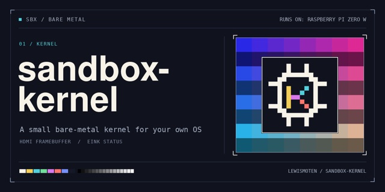

sandbox-kernel
A small bare-metal kernel for your own OS

A small, reusable bare-metal kernel that starts on a Raspberry Pi Zero W and loads your own operating system as one user-mode program from the SD card.
Source The guide Game-Maker OS
Executive summary
Why it exists
I want anyone to be able to make their own operating system without first writing the part that talks to the hardware. That should include a JavaScript one, so it needs to be very easy to build a custom OS on top. I picked the Raspberry Pi Zero W as the lowest common denominator. The kernel isn't meant to stay Raspberry Pi-only.
Outcome
M0 is qualified on the Zero W v1.1 and M1 is in progress. The guide covers boot, what a program may do and developing over USB, so someone can start their own OS.
My role
Designer, director and maintainer. Built with AI coding assistance from Claude (Opus 5.5 and Sonnet 5.5) plus reviews by an agent on my Linux machine. The art was made with ChatGPT GPT-6.1 Sol from my directions.
Technical overview
How it works
A kernel in C that runs bare metal on the Pi Zero W. It keeps two kernel slots, A and B, and updates into the idle one with a trial boot that has to be confirmed, so a bad update falls back. The operating system is one user-mode ELF file on the SD card. If it fails, the kernel recovers to a DIAG program and a recovery console. Programs get a POSIX-style ABI: files, framebuffer, input, clock, cache and saves in /OS/SAVES. An e-ink panel shows status, and USB development commands send files and updates from a computer. Game-Maker OS is the first OS built on it.
Hard parts
The kernel has to protect itself from the program it loads, so a broken OS can't take the board down with it. Updates have to survive a failed boot. Work in progress: HDMI audio, a USB keyboard through OTG, and HDMI-CEC.
How it was made
The kernel, its tests and its documentation were written with Claude Code and reviewed by an agent on my Linux machine. The social preview image was made with ChatGPT GPT-6.1 Sol from my directions.